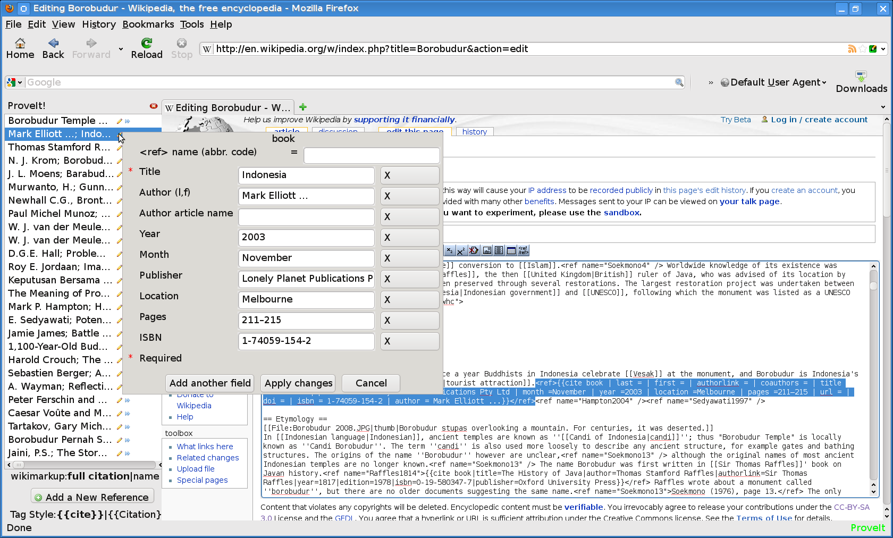

Go to the page you wish to edit, and click the edit tab up top.

The regular MediaWiki edit page will appear, along with the ProveIt sidebar at left.

Find the reference you wish to edit in the sidebar list, and click to select it. The first time you click, the sidebar may reload. Ignore this and click again. The reference will be highlighted in the ProveIt list, and the text will be highlighted in the MediaWiki edit box. For this example, we are editing Lonely Planet's Indonesia, by Mark Elliott.
{kind=link}
After ensuring the correct reference is selected, click the pencil icon next to the reference you have selected. This will bring up the edit popup. 
{kind=link}
Now, make whatever changes are necessary using the edit popup's fields. For this example, we will add a <ref> name of indonesia_lonely, include the coauthors' names, Elliott, Mark, Paul Greenway, Virginia Jealous, use the 13-digit ISBN, 978-1740591546, instead of the 10-digit, and change Melbourne to Melbourne, Australia.
When ready, click Apply Changes.
{kind=link}
You will see the reference highlighted in the ProveIt sidebar list. Note that the displayed name in the sidebar has changed to reflect the new authors. The reference text in the MediaWiki edit box will be highlighted, and your changes will be visible there.
{kind=link}